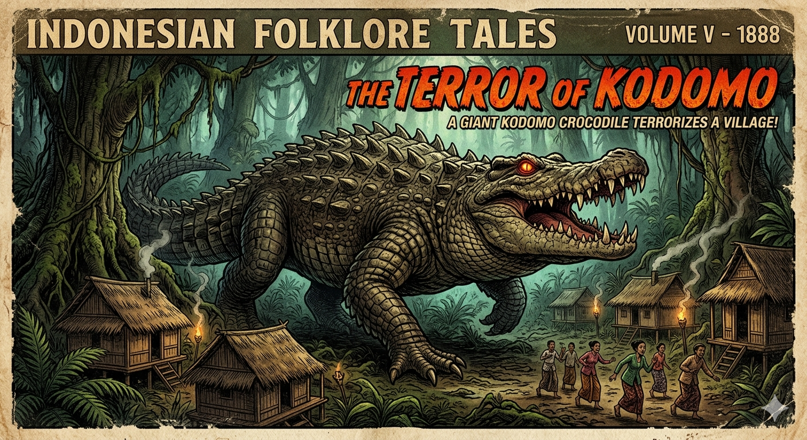

דרקון קומודו
מתנין היבשה המיתולוגי ללטאה הגדולה בעולם
מחקר אטימולוגי: מקור השמות
השם המדעי הטקסונומי: Varanus komodoensis
השם המדעי משלב מונחים מהשפה הערבית העתיקה יחד עם ציון המיקום הגיאוגרפי הייחודי שבו התגלה המין:
- Varanus: נגזר מהמילה הערבית וַרַל (ورل), שפירושה "לטאת כוח". כשהשם תועתק ללטינית על ידי חוקרים אירופאים, הוא שובש והפך ל-Varanus. משפחת הכוחיים (Varanidae) כוללת את הלטאות הגדולות והאינטליגנטיות ביותר.
- komodoensis: שם המין המציין את שיוכו לאי קומודו (Komodo) שבאינדונזיה, המקום שבו תועד לראשונה. הסיומת "-ensis" בלטינית פירושה "שייך ל-" או "מגיע מ-".
השם הפולקלוריסטי המקומי: Ora
- אורה (Ora): השם בו מכנים ילידי האי קומודו את הלטאה. הפירוש המילולי בשפתם הוא פשוט "תנין יבשה", שם המשקף היטב את המראה וההתנהגות הטורפנית שלה.
התגלית שהפחידה את האימפריה ההולנדית
בתחילת המאה ה-20, הגיעו לאוזני פקידי הממשל הקולוניאלי ההולנדי באינדונזיה שמועות משונות ממלחים ודייגים. הם סיפרו על איים נידחים (קומודו, רינצ'ה ופלורס) שורצים ב"תניני יבשה" עצומים באורך של מספר מטרים, המסוגלים לטרוף חזירי בר, צבאים ואף בני אדם שלמים.
בשנת 1910, נשלח קצין הצבא ההולנדי, לוטננט ואן סטיין ואן הנסברוק (Van Steyn van Hensbroek), לאי קומודו במטרה לחקור את השמועות הללו. למרבה תדהמתו, השמועות לא היו הגזמת יורדי-ים. ואן הנסברוק הצליח לצוד ולהרוג פרט אחד באורך 2.1 מטרים, ושלח את עורו ואת התמונות למוזיאון הזואולוגי בבוגור, אינדונזיה. שם, בשנת 1912, זיהה מנהל המוזיאון, פיטר אנתוני אוונס (Peter Ouwens, 1849–1922), כי מדובר במין חדש ועצום של לטאת כוח, והעניק לה את שמה המדעי.
המיתוס מול המציאות הזואולוגית
האגדה (דרקונים יורקי אש): למרות שהם לא יורקים אש, המראה הפרימיטיבי שלהם, לשונם הצהובה-מפוצלת המזדקרת כמו להבה, וגודלם המפלצתי, גרמו למלחים האירופאים לכנות אותם "דרקונים". מיתוס נפוץ (שאפילו היה מקובל במדע עד לא מזמן) טען שהרוק שלהם מכיל בקטריות קטלניות, והם פשוט נושכים טרף ומחכים שימות מזיהום.
המציאות (טורף-על חכם וארסי): מחקרים חדישים מ-2009 חשפו את האמת המצמררת: הדרקונים לא מסתמכים על בקטריות. יש להם בלוטות ארס אמיתיות בלסת התחתונה! הארס גורם לירידת לחץ דם, מניעת קרישת דם, והלם בטרף. הם ציידים מארבים מיומנים המסוגלים לרוץ במהירות של עד 20 קמ"ש לפרצים קצרים.
מאפיינים ביולוגיים של דרקון קומודו
- גודל ומשקל: הלטאה הגדולה בעולם. זכרים יכולים להגיע לאורך של עד 3 מטרים ולמשקל של למעלה מ-70 ק"ג (ואף יותר בפרטים שבעים במיוחד).
- חוש ריח: כמו נחשים, הם מריחים בעזרת לשונם המפוצלת (איבר יעקובסון). הם מסוגלים להריח פגר או דם ממרחק של כמעט 10 קילומטרים!
- שריון קשקשים: עורם מחוזק בלוחיות עצם זעירות הנקראות אוסטאודרמים (Osteoderms), המשמשות כשריון שרשראות טבעי נגד נשיכות של דרקונים אחרים. מעניין לציין ששריון זה מתפתח רק כשהם מתבגרים.
- רביית בתולין (פרתנוגנזה): במקרי חירום בהם אין זכרים בסביבה, נקבות דרקון קומודו מסוגלות להטיל ביצים מופרות בעצמן (ללא הזדווגות), שמהן יבקעו רק זכרים!
תיעוד חזותי (לחץ להגדלה)

המיתוס: "תנין היבשה" המפלצתי

המציאות: הלטאה הגדולה בעולם